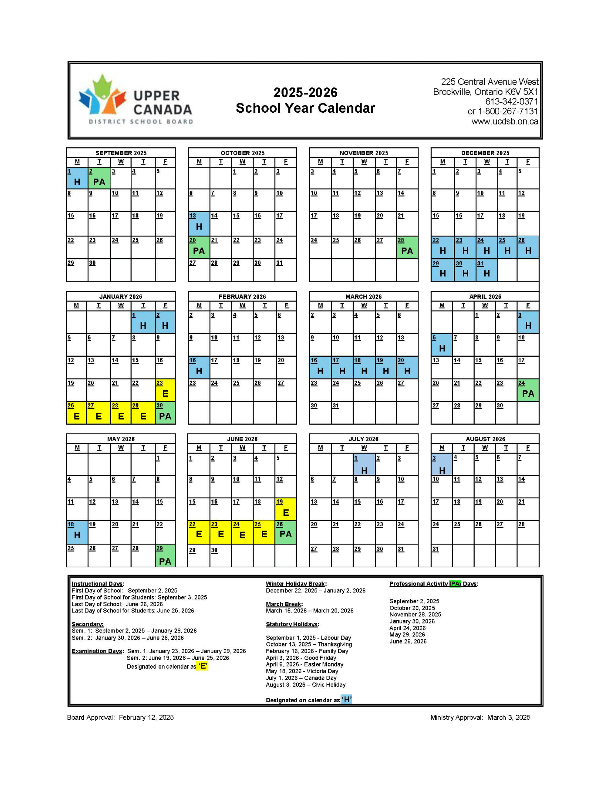

School Year Calendar 2025-2026
Below is the 2025-2026 School Year Calendar for the Upper Canada District School Board, which includes Charlan District High School.

For the official and most current version, or to download the calendar, please visit the UCDSB Official School Year Calendar Page .